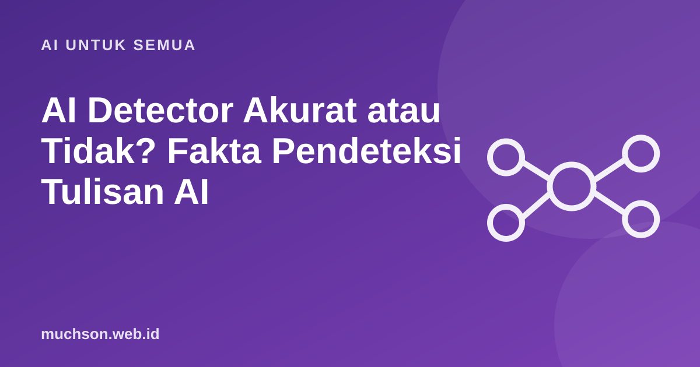

Beranda › Artikel › AI untuk Semua
AI untuk SemuaAI Detector Akurat atau Tidak? Fakta Pendeteksi Tulisan AI
Mahasiswa panik karena esai yang ditulisnya sendiri dinilai "90% AI". Guru bingung harus percaya hasil detektor atau tidak. Pendeteksi tulisan AI kini banyak dipakai, tetapi bukti menunjukkan alat ini jauh dari sempurna. Artikel ini merangkum faktanya dan menawarkan cara yang lebih adil untuk menilai keaslian tulisan.

Bagaimana AI detector bekerja?
Kebanyakan pendeteksi mengukur seberapa "mudah ditebak" sebuah teks. Model bahasa cenderung memilih kata yang paling mungkin, sehingga teks buatan AI sering punya perplexity (tingkat kejutan) rendah dan variasi kalimat yang seragam. Detektor menganggap teks yang sangat mudah ditebak sebagai kemungkinan buatan AI.
Masalahnya, tulisan manusia juga bisa mudah ditebak: tulisan yang sangat formal, ringkasan teknis, atau tulisan dari orang yang menulis dalam bahasa kedua dengan kosakata terbatas.
Apa kata bukti?
- OpenAI menutup detektornya sendiri. OpenAI meluncurkan AI Classifier pada Januari 2023. Dalam uji mereka, alat itu hanya mengenali 26% teks buatan AI sebagai "kemungkinan AI", dan salah menandai 9% teks manusia sebagai buatan AI. Pada 20 Juli 2023, OpenAI menghentikannya karena akurasinya rendah.
- Bias terhadap penulis non-native. Studi Liang dan rekan dari Stanford (2023, jurnal Patterns) menguji tujuh detektor. Esai siswa kelas 8 AS dinilai hampir sempurna sebagai tulisan manusia, tetapi rata-rata lebih dari separuh (sekitar 61%) esai TOEFL dari penulis non-native salah dicap sebagai buatan AI.
- Mudah dikelabui. Studi yang sama menunjukkan bahwa meminta AI menulis ulang dengan kosakata lebih beragam bisa menurunkan deteksi, sehingga orang yang berniat curang bisa lolos sementara orang jujur bisa tertuduh.
Bagi pelajar Indonesia yang menulis dalam bahasa Inggris, temuan bias ini sangat relevan. Hasil detektor yang tinggi bukan bukti bahwa tulisan dibuat AI.
Kenapa salah deteksi berbahaya
Dalam pendidikan, salah positif paling berbahaya karena menuduh orang yang tidak bersalah. Satu tuduhan bisa berdampak pada nilai, beasiswa, dan reputasi. Karena itu, banyak universitas dan pembuat alat sendiri menyarankan agar skor detektor tidak dijadikan satu-satunya bukti.
Bila tulisan Anda dituduh buatan AI
- Tetap tenang dan minta penjelasan dasar penilaiannya.
- Tunjukkan riwayat versi dokumen dan draf-draf awal.
- Tawarkan menjelaskan isinya secara lisan atau menulis ulang bagian tertentu di depan dosen atau guru.
- Rujuk kebijakan kampus tentang penggunaan alat deteksi dan prosedur banding.
Untuk guru dan dosen: cara menilai yang lebih adil
Pendeteksi AI mungkin membaik di masa depan, dan beberapa penyedia mengembangkan penanda (watermark) atau metode asal-usul konten. Namun untuk saat ini, penilaian manusia yang memahami proses belajar tetap jauh lebih dapat diandalkan.
Tanya jawab
Apakah AI detector akurat?
Kenapa tulisan saya dianggap AI padahal menulis sendiri?
Apakah OpenAI punya alat deteksi tulisan AI?
Bagaimana membuktikan tulisan buatan sendiri?
Sumber dan bacaan lanjut
- OpenAI: New AI classifier for indicating AI-written text (dengan catatan penghentian)
- Liang, W. dkk. (2023). GPT detectors are biased against non-native English writers (arXiv)
- Stanford HAI: AI-Detectors Biased Against Non-Native English Writers
- Memakai AI untuk tugas kuliah secara etis (artikel terkait)